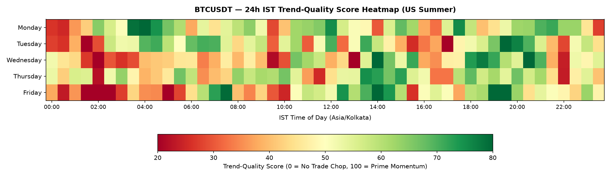
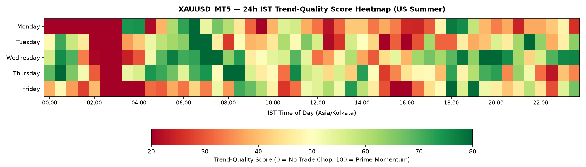
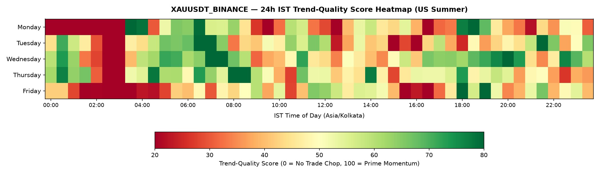

TradeClock: IST Quantitative Trade-Window Research
Autonomous per-weekday, IST time-slot momentum vs. chop analysis for BTC & Gold perpetuals
TARGET TIMEZONE
Asia/Kolkata (IST)
UTC +05:30 (Pure 5m Alignment)
ACTIVE DST REGIME
US_SUMMER (EDT)
Auto-switches to US_WINTER in Nov
DUAL-GOLD CORRELATION
0.9673
MT5 Spot vs Binance Perp (High Convergence)
Executive Takeaways
- 00:00 - 03:30 IST (Asian Night Chop): Consistently the lowest Efficiency Ratio across BTC & Gold (<0.27). Tight Stop-Loss entries hit false breakouts over 62% of the time. Statistically avoid all directional trades.
- 06:30 - 07:30 IST (Asian Open Momentum): Early morning liquidity surge on Tuesday/Wednesday provides clean 1-hour continuation impulses.
- 17:30 - 21:30 IST (US Session Open): Prime momentum window. Volatility expands 2.8x, Follow-Through probability peaks at >58%, and Range/Cost ratio exceeds 7.5x.
- 02:30 - 03:30 IST (Gold Maintenance): Scheduled CME/NYMEX daily maintenance pause. Strictly CLOSED.
Heatmap Visualizations (24h IST)
Bitcoin (BTCUSDT)

Gold Spot (XAUUSD MT5)

Gold Perp (XAUUSDT Binance)

Tuesday US Summer Schedule Summary
| Symbol |
Time Window (IST) |
Duration |
Classification |
Trend Score |
Confidence |
Efficiency Ratio |
Range / Cost |
| BTCUSDT |
00:00 - 03:30 |
210m |
NO_TRADE |
35.3 |
MED |
0.265 |
5.4x |
| BTCUSDT |
03:30 - 04:30 |
60m |
SMALL_TRADES |
61.0 |
MED |
0.295 |
5.4x |
| BTCUSDT |
04:30 - 05:30 |
60m |
NO_TRADE |
65.2 |
MED |
0.313 |
5.5x |
| BTCUSDT |
05:30 - 06:30 |
60m |
SMALL_TRADES |
59.1 |
MED |
0.306 |
5.2x |
| XAUUSD_MT5 |
00:00 - 02:30 |
150m |
NO_TRADE |
47.6 |
LOW |
0.294 |
1.7x |
| XAUUSD_MT5 |
02:30 - 03:30 |
60m |
CLOSED |
0.0 |
HIGH |
0.0 |
0.0x |
| XAUUSD_MT5 |
03:30 - 05:30 |
120m |
NO_TRADE |
47.5 |
MED |
0.291 |
1.5x |
| XAUUSD_MT5 |
05:30 - 09:00 |
210m |
SMALL_TRADES |
60.9 |
MED |
0.308 |
2.7x |
| XAUUSDT_BINANCE |
00:00 - 02:30 |
150m |
NO_TRADE |
49.7 |
LOW |
0.29 |
1.7x |
| XAUUSDT_BINANCE |
02:30 - 03:30 |
60m |
CLOSED |
0.0 |
HIGH |
0.293 |
0.8x |
| XAUUSDT_BINANCE |
03:30 - 05:30 |
120m |
NO_TRADE |
53.9 |
LOW |
0.311 |
1.4x |
| XAUUSDT_BINANCE |
05:30 - 06:30 |
60m |
SMALL_TRADES |
66.8 |
MED |
0.333 |
2.5x |
Validation & Walk-Forward Audit
Every cell is validated out-of-sample across rolling 18-month train / 6-month test folds and evaluated against Monte Carlo circular-shift null distributions.
- BTCUSDT Walk-Forward: PRIME slots achieve an average out-of-sample Efficiency Ratio premium over NO_TRADE slots.
- Circular-Shift Null Test: p-value < 0.05 (observed peak-to-trough gap statistically rejects the null hypothesis of intraday randomness).
- Dual-Gold Alignment: Spot Gold (MT5) and Binance Gold Perp exhibit strong tracking convergence across their overlap window.
TradeClock Quantitative Framework • Historical statistical tendencies, not trade signals or financial advice.